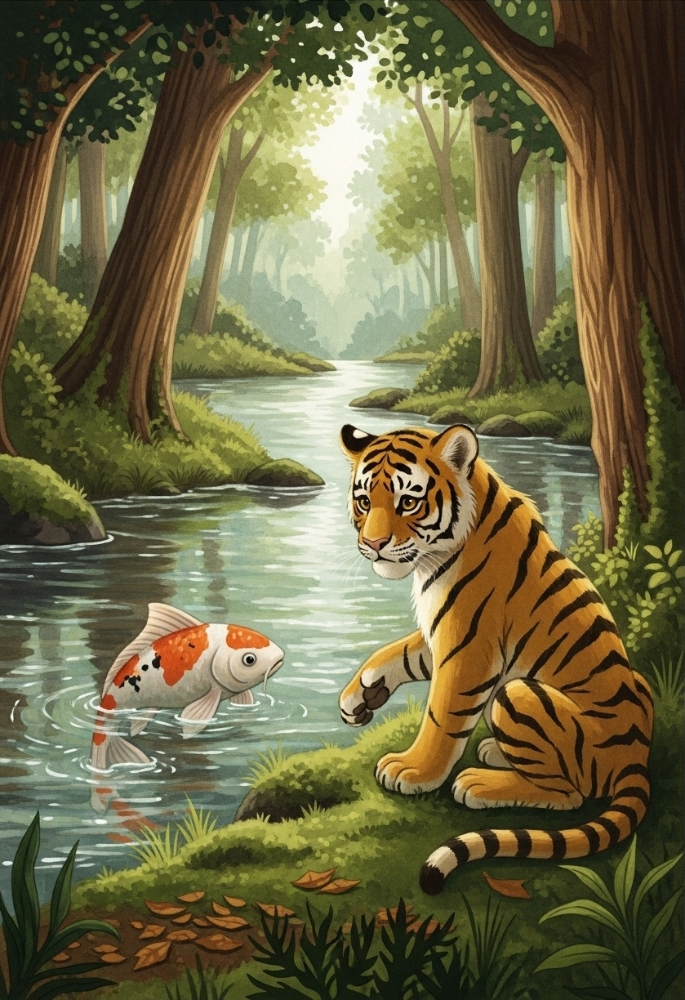
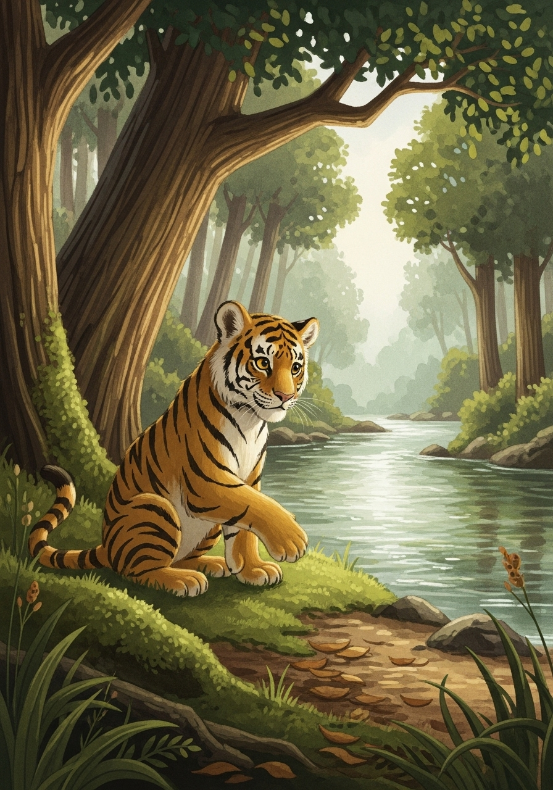
- 1 -
在臺灣東北角一個山溝深處，有兩條清澈的溪流－平林溪與牡丹溪。溪畔住著一隻年輕的老虎。老虎雖然身形高大，卻有個小秘密：他非常怕水。
- 2 -
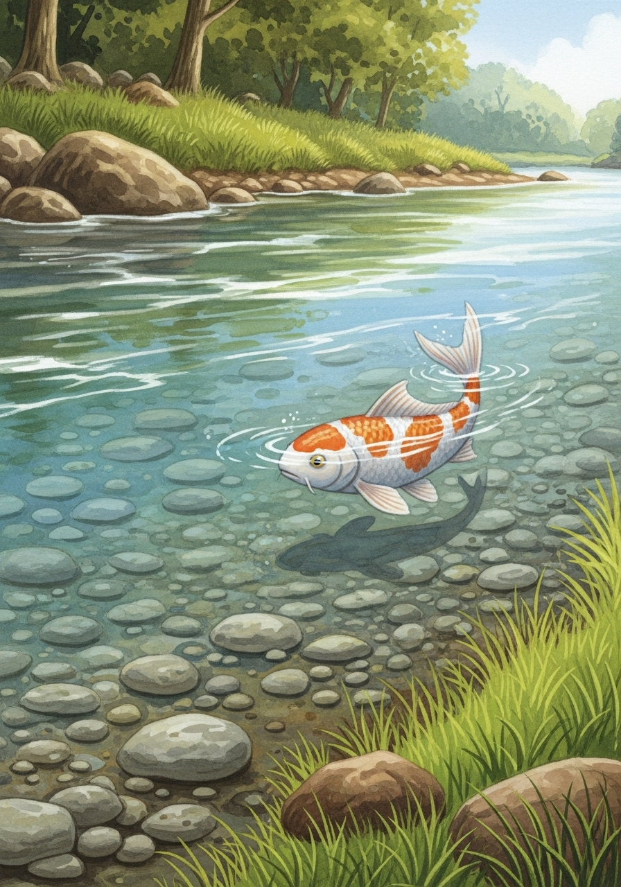
- 3 -
河裡住著一條聰明又勇敢的鯉魚。鯉魚每天看著老虎在岸邊徘徊，卻從不踏入水中，感到十分好奇。
- 4 -
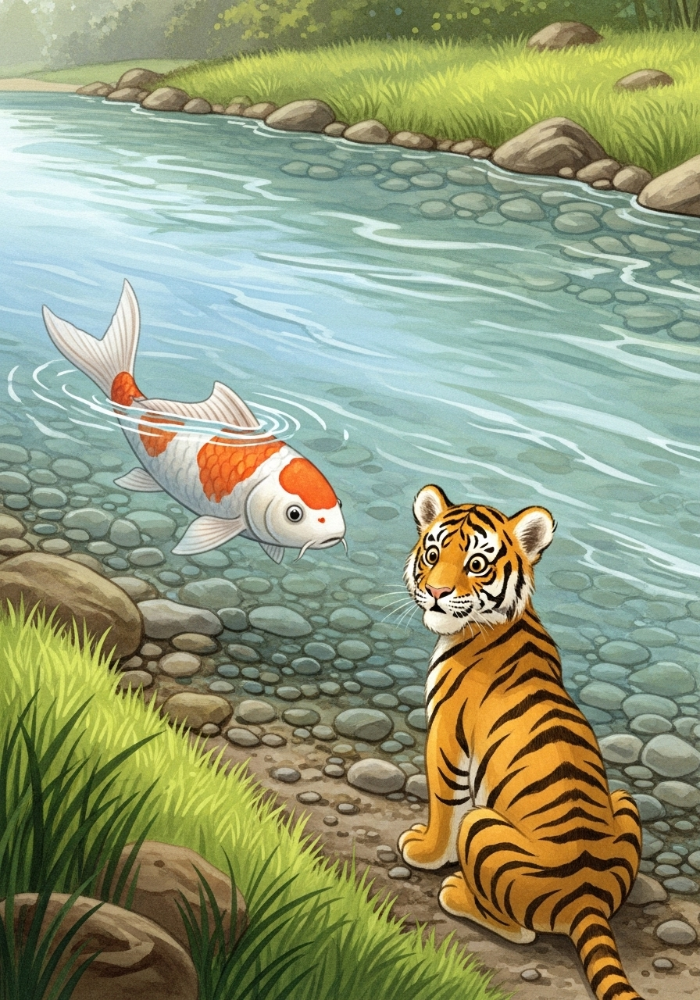
- 5 -
有一天，鯉魚鼓起勇氣，游到岸邊，輕聲問老虎：「老虎，你為什麼總是在岸邊看著水，卻從不下來玩呢？」
- 6 -
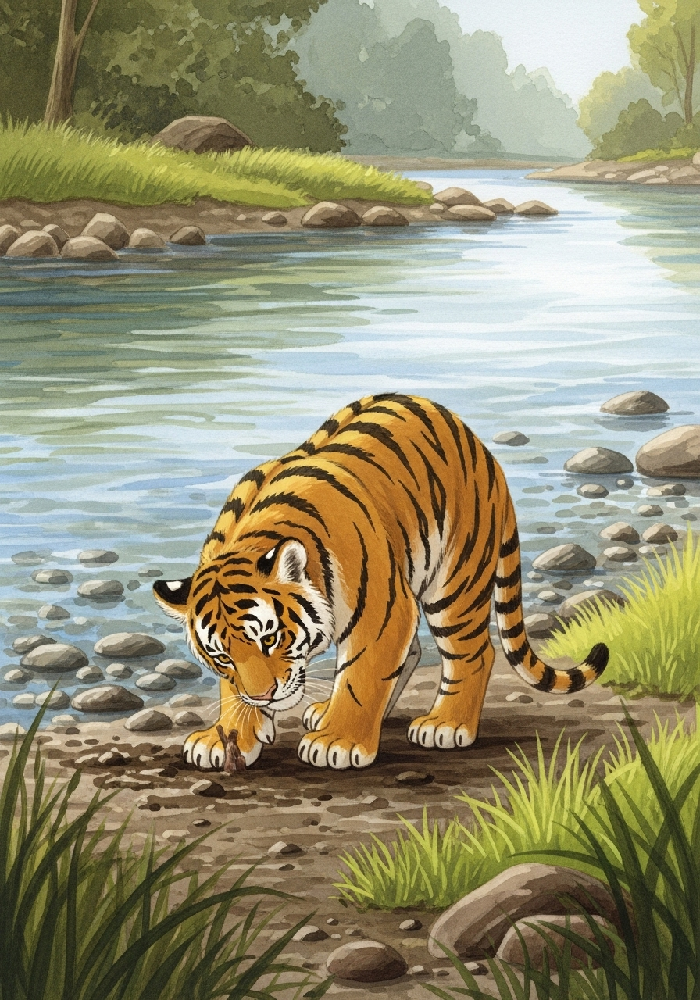
- 7 -
老虎嚇了一跳，臉頰泛紅，低聲說：「我…我害怕水。它看起來好深，我怕會沉下去。」
- 8 -
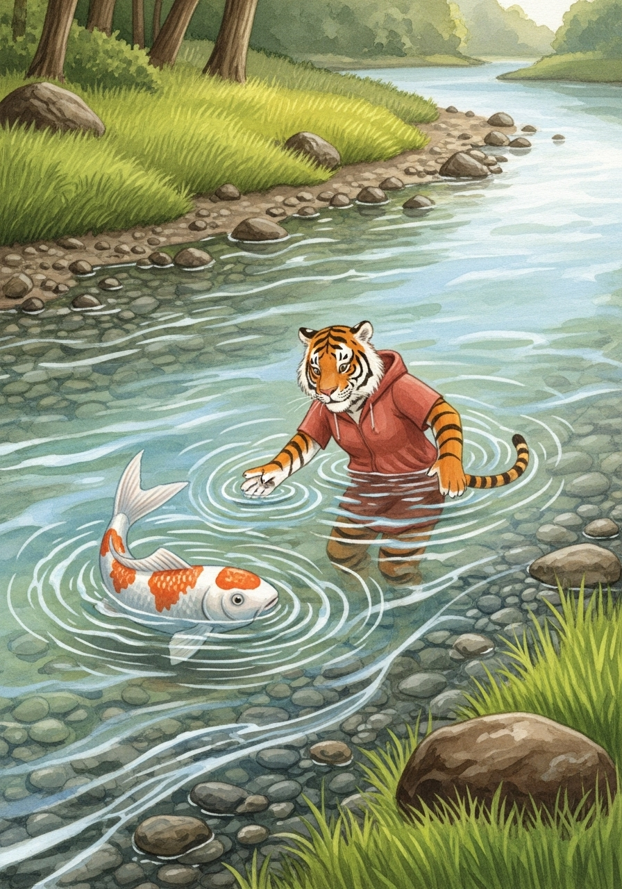
- 9 -
鯉魚聽了，輕輕笑了笑：「水一點都不可怕，它很溫柔，能承載萬物。如果你願意，我可以帶你感受水的奇妙。」
- 10 -
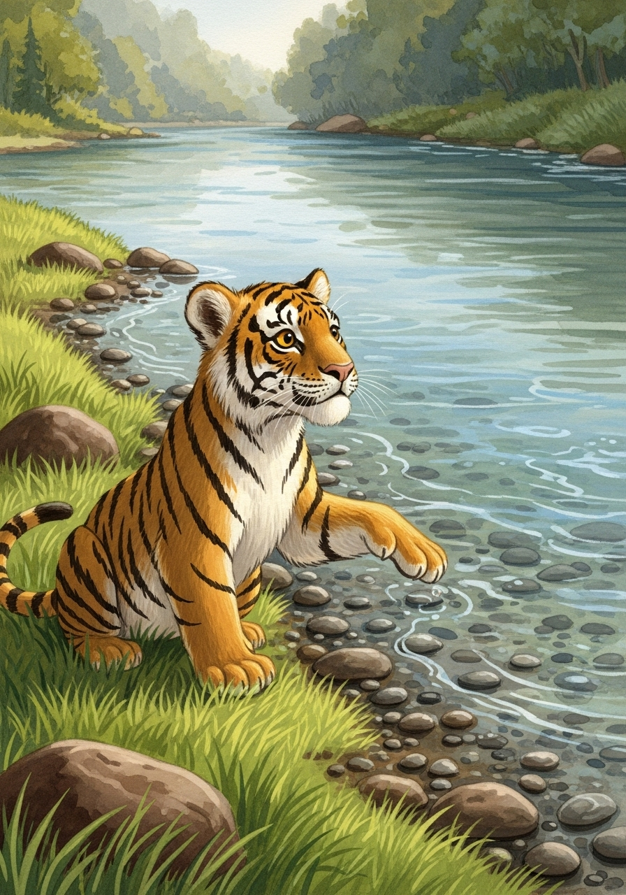
- 11 -
老虎雖然還是有些害怕，但鯉魚真誠的眼神讓他感受到了一絲溫暖。他開始思考，或許可以嘗試一下。
- 12 -
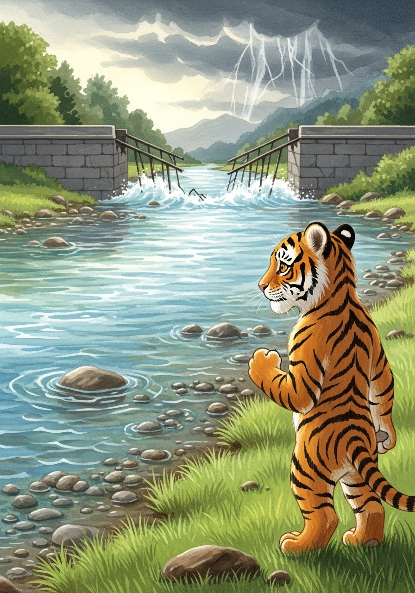
- 13 -
幾天後，森林裡傳來一個消息：一場暴雨沖斷了平林溪上的一座橋（平林橋）。河對岸的雙溪高中師生身處險境。
- 14 -
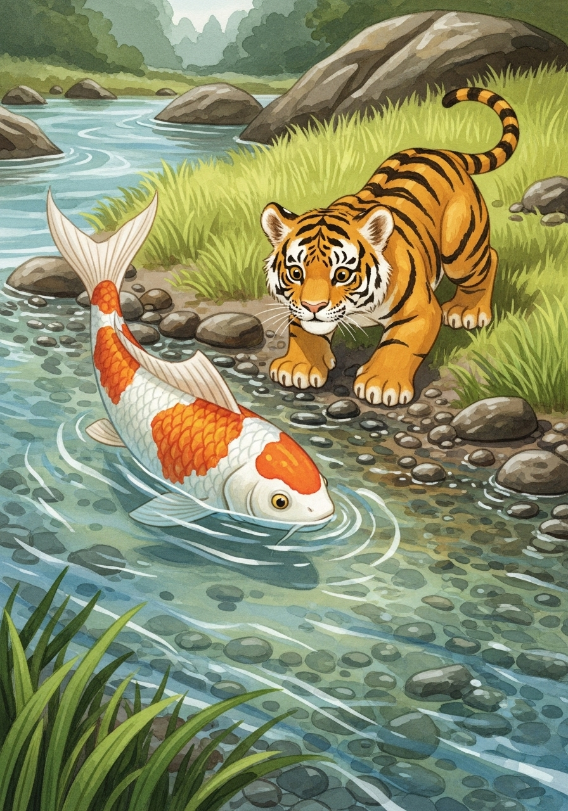
- 15 -
老虎心急如焚，他知道自己必須做點什麼。鯉魚看到老虎的焦慮，游到他身邊，堅定地說：「老虎，現在是展現勇氣的時候了。我會在你身邊，引導你救下雙溪高中師生。」
- 16 -
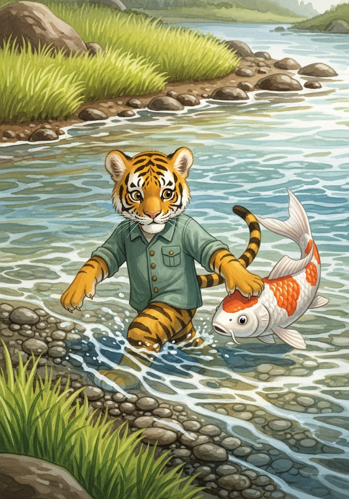
- 17 -
老虎深吸一口氣，在鯉魚的引導下，小心翼翼地將爪子伸入水中，然後慢慢地，一步一步地，走進了平林溪。水流雖然急，但鯉魚一直在他身邊，給予他無聲的鼓勵。
- 18 -
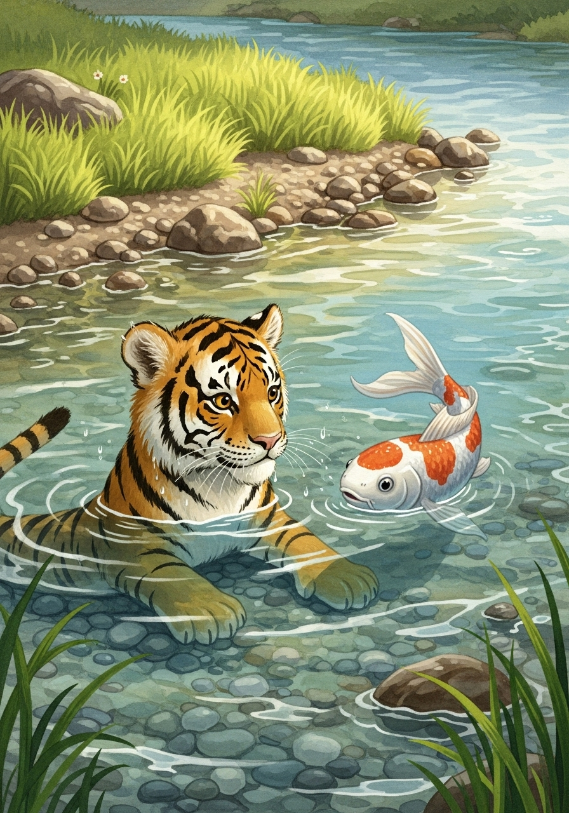
- 19 -
最終，老虎成功渡過了河流，救出了雙溪高中師生。當他回到岸邊時，他不再是那個害怕水的老虎了。他和鯉魚相視而笑，他們的友誼在勇氣的洗禮下顯得更加堅固，因為故事發生在秋天，因此世人們將這段愛與勇氣的佳話命名為「鯉魚秋老虎」。
- 20 -

故事結束
願勇氣與友誼與你同在